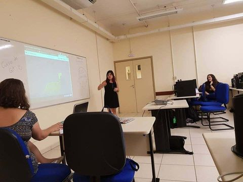
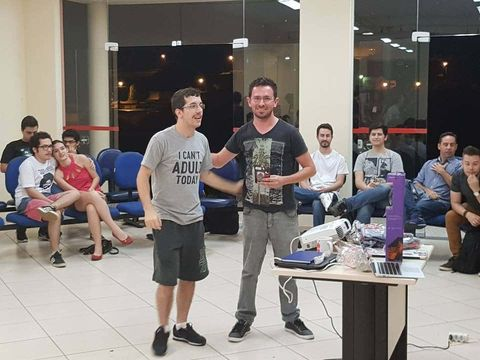
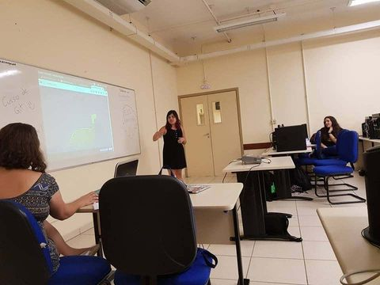
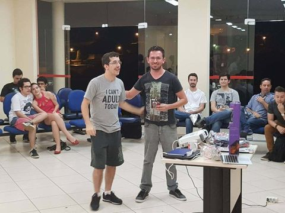

Palestrantes confirmados

Formado em analise e desenvolvimento de sistemas na FATEC, Analista e desenvolvedor senior na Ventron. Nunca gostei muito da area, até começar trabalhar, Hoje sou responsavel pelo desenvolvimentos de Chatbots e arquiteturas das nossas aplicações aqui dentro da empresa.
Desenvolvedor FullStack na Tegra Sorocaba, mestre de RPG, desenvolvedor por acaso, e ai bora tomar uma cerveja ?
Estudante do último semestre de Sistemas de Informação pela UNISO, desenvolvedor de software desde 2016 utilizando tecnologias Microsoft (C#) no backend e frontend react/angular. Atualmente trabalhando na HBSIS, uma empresa de Blumenau que recentemente veio para Sorocaba.

 


